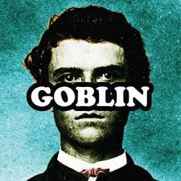
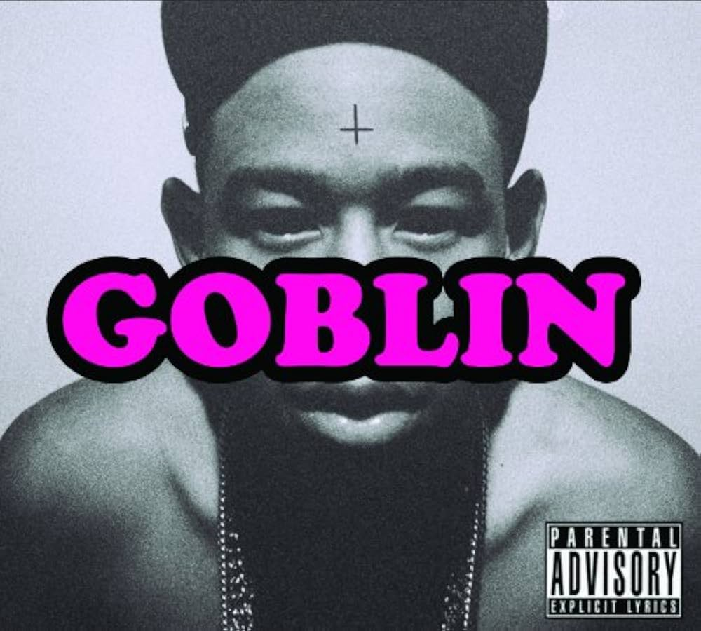

inicio
Lançado em maio de 2011, Goblin é o álbum de estreia em estúdio de Tyler, The Creator e o projeto que o catapultou ao estrelato global. O disco é uma continuação direta de sua mixtape Bastard, mantendo a narrativa de uma sessão de terapia com o personagem Dr. TC. Musicalmente, o álbum é marcado por batidas minimalistas, sintetizadores sombrios e uma atmosfera claustrofóbica, quase inteiramente produzida pelo próprio Tyler.
O impacto visual e cultural foi definido pelo videoclipe de "Yonkers", que se tornou um fenômeno viral no YouTube. No entanto, o conteúdo lírico gerou intensos debates devido ao uso frequente de termos homofóbicos e letras que descreviam violência extrema e misoginia. Tyler defendia que os versos eram parte de personagens fictícios e de sua busca por chocar a sociedade conservadora.
Abaixo, alguns pontos fundamentais sobre a obra:
Mesmo sendo o trabalho mais controverso de sua carreira, Goblin estabeleceu Tyler como um visionário autodidata que não tinha medo de desafiar as normas da indústria fonográfica. Sem a crueza e a rebeldia contidas nessas faixas, a evolução artística que vimos em álbuns posteriores, como Flower Boy e IGOR, provavelmente não teria o mesmo peso narrativo.
Primeira capa:

Segunda capa:

A Capa Principal (Cena Clássica): A versão mais conhecida apresenta uma fotografia antiga de um garoto loiro com olhos distorcidos e a palavra "GOBLIN" escrita em uma fonte que remete a giz ou pichação. O garoto na foto é, na verdade, uma versão jovem do personagem "Buffalo Bill" (do filme O Silêncio dos Inocentes), simbolizando a natureza perturbada e o "horrorcore" que o álbum apresenta.
A Capa Alternativa (O Rosto de Tyler): A segunda capa traz um close-up em tons de sépia ou preto e branco do rosto de Tyler, usando um gorro e cobrindo os olhos com as mãos. Esta versão é considerada mais pessoal, focando no artista como o criador de todo aquele caos sonoro, destacando o isolamento e a pressão da fama que ele menciona em faixas como Yonkers.